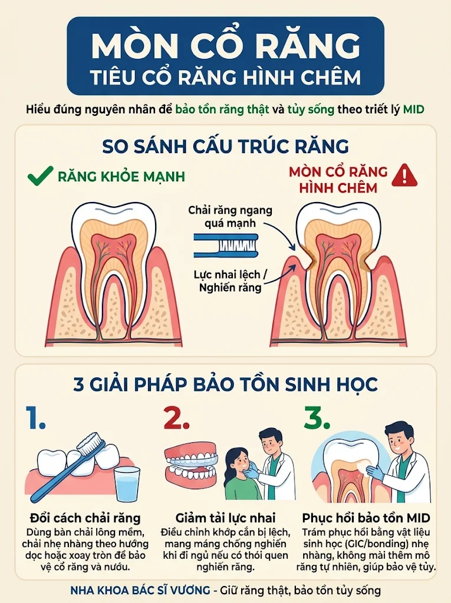

1. Tiêu đề
Sâu Răng & Phục Hồi Theo Triết Lý Nha Khoa Can Thiệp Tối Thiểu (MID): Khi Nào Tái Khoáng, Khi Nào Trám Sinh Học Và Cách Giữ Trọn Tủy Sống Cho Người Tuổi Trung Niên & Gia Đình
2. Vấn đề: Hai thái cực sai lầm khi đối diện với sâu răng ở tuổi trung niên và gia đình
Trong hơn 40 năm đứng bên ghế máy nha khoa, trực tiếp khám và điều trị cho nhiều thế hệ gia đình, tôi nhận thấy sâu răng vẫn luôn là bệnh lý phổ biến nhất, nhưng cũng là vấn đề chịu nhiều quan niệm sai lầm đáng tiếc nhất. Đặc biệt ở các cô bác, anh chị tuổi trung niên (từ 35 đến 58 tuổi) — những người vừa gánh vác công việc xã hội, vừa chăm lo sức khỏe cho cả cha mẹ già lẫn con nhỏ trong gia đình — tôi thường xuyên bắt gặp hai thái cực trái ngược nhau khi đối diện với một chiếc răng sâu:
⚠️ Thái cực 1: Tâm lý chủ quan, trì hoãn — “Chưa đau nhức nghĩa là răng vẫn còn tốt”
Rất nhiều cô bác phát hiện trên mặt nhai có rãnh đen sậm, kẽ răng hay bị giắt thức ăn, hoặc sát viền lợi có vết ố nâu nhạt kèm cảm giác ê buốt thoáng qua khi uống nước lạnh hay ăn đồ ngọt. Thế nhưng vì bận rộn, phần vì tâm lý ngại tiếng máy khoan nha khoa, cô bác thường chặc lưỡi bỏ qua. Chỉ đến khi chiếc răng đột ngột đau nhức dữ dội từng cơn về đêm, đau giật lên thái dương không thể chợp mắt được, hoặc thân răng tự nhiên vỡ sập một mảng lớn khi đang ăn cơm, cô bác mới vội vã tìm đến phòng khám. Lúc này, vi khuẩn đã xâm nhập sâu làm viêm tủy không hồi phục hoặc hoại tử tủy, khiến cơ hội bảo tồn sự sống tự nhiên của chiếc răng bị thu hẹp đi rất nhiều.
⚠️ Thái cực 2: Tâm lý nóng vội, can thiệp quá mức — “Hễ thấy sâu răng là muốn khoan rộng, lấy tủy sớm hoặc mài bọc sứ”
Ngược lại với sự trì hoãn, không ít anh chị và cô bác vì quá lo sợ sâu răng tái phát nên khi mới thấy một đốm sâu hay một lỗ sâu ngà, đã vội vàng yêu cầu bác sĩ khoan thật rộng, lấy tủy luôn cho khỏi đau về sau hoặc mài nhỏ bọc sứ lại. Thậm chí, nhiều người vẫn giữ quan niệm truyền thống từ hàng chục năm trước rằng muốn miếng trám không bong thì phải khoan mở rộng mô răng lành theo hình hộp, hình đuôi én để giữ chất hàn.
“Bác sĩ cứ khoan thật rộng ra cho sạch hết, lấy luôn cái tủy đi cho khỏi đau về sau, hoặc mài nhỏ bọc chụp sứ lại cho bền vĩnh viễn!” — Một yêu cầu quen thuộc nhưng rất đáng tiếc trên lâm sàng.
Với tư cách là một người thầy thuốc gắn bó cả cuộc đời với nghề, tôi luôn trăn trở trước cả hai thái cực ấy. Mô răng thật (men răng và ngà răng) một khi đã bị mũi khoan mài cắt đi thì vĩnh viễn không bao giờ mọc lại được. Và tủy răng chính là “trái tim” nuôi dưỡng chiếc răng: một chiếc răng bị lấy tủy sớm khi chưa cần thiết sẽ mất đi nguồn cấp máu và độ dẻo dai sinh học, trở nên giòn khô như cành cây khô và rất dễ nứt tét chân răng sau vài năm ăn nhai.
Can thiệp đúng thời điểm, bảo tồn tối đa từng milimet mô răng lành và chiến đấu đến cùng để giữ trọn sự sống của phức hợp ngà – tủy.
3. Nguyên nhân: Bản chất sinh học của sâu răng và 4 hình thái đặc trưng ở tuổi trung niên & gia đình
Để biết khi nào chưa cần khoan răng và khi nào cần phục hồi sinh học, trước hết chúng ta cần hiểu đúng bản chất gốc rễ của bệnh sâu răng.
Bản chất sinh học: Sâu răng không phải là một “cái lỗ tĩnh”, mà là sự mất cân bằng giữa Khử khoáng và Tái khoáng
Nhiều cô bác thường hình dung sâu răng giống như một con mọt đục thủng chiếc răng một cách thụ động. Thực tế trên phương diện sinh học phân tử và hóa sinh khoang miệng, bề mặt răng của chúng ta luôn diễn ra một “cuộc kéo co” liên tục từng giờ giữa hai quá trình đối lập:
- Quá trình Khử khoáng (Demineralization – Mất khoáng): Khi chúng ta ăn các thực phẩm chứa đường và tinh bột, vi khuẩn sinh sâu răng (đặc biệt là Streptococcus mutans và Lactobacillus) nằm trong lớp mảng bám dính trên răng sẽ chuyển hóa đường thành các axit hữu cơ. Khi độ pH tại bề mặt răng tụt xuống dưới ngưỡng tới hạn (pH < 5.5 đối với men răng, và đặc biệt chỉ cần pH < 6.2 – 6.7 đối với ngà chân răng), axit sẽ hòa tan các ion Canxi (Ca2+) và Phosphate (PO43-) ra khỏi mạng lưới tinh thể Hydroxyapatite của răng, làm mô răng mềm và rỗng xốp dần từ bên dưới bề mặt.
- Quá trình Tái khoáng (Remineralization – Bù khoáng tự nhiên): Ngay sau bữa ăn khoảng 30–45 phút, tuyến nước bọt của chúng ta sẽ phát huy vai trò như một “lá chắn sinh học” kỳ diệu. Hệ đệm Bicarbonate trong nước bọt trung hòa axit, đưa độ pH trở lại mức trung tính, đồng thời cung cấp ngược lại các ion Canxi, Phosphate và Fluoride để gắn kết trở lại vào những vùng men răng vừa bị mất khoáng, giúp bề mặt răng cứng chắc trở lại.
Sâu răng chỉ thực sự hình thành và tiến triển thành lỗ thủng khi cán cân nghiêng hẳn về phía Khử khoáng (do mảng bám không được làm sạch, ăn vặt nhiều lần trong ngày, hoặc thiếu hụt nước bọt) khiến khả năng Tái khoáng tự nhiên không bù đắp kịp.
4 Hình thái sâu răng đặc trưng ở tuổi trung niên (35–58 tuổi) và các thành viên trong gia đình
Khác với trẻ nhỏ thường chỉ bị sâu mặt nhai cấp tính, ở lứa tuổi trung niên và trong một gia đình đa thế hệ, sâu răng thường xuất hiện dưới 4 hình thái lâm sàng rất đặc trưng nhưng dễ bị bỏ sót:
Sâu hố rãnh mặt nhai tiến triển ngầm
Ở cả thanh thiếu niên và người trưởng thành, các rãnh sâu hẹp trên mặt nhai răng hàm là nơi lông bàn chải không chạm tới đáy được. Lớp men mặt nhai rất dày và cứng nên đôi khi bên ngoài chỉ thấy một đường nứt đen nhỏ như sợi chỉ, nhưng vi khuẩn đã luồn qua khe hẹp đó để lan rộng âm thầm trong lớp ngà mềm bên dưới (tạo hình chóp nón ngược), chỉ chờ ngày lớp men bên trên sập vỡ.
Sâu kẽ răng âm thầm (Sâu mặt bên)
Đây là “kẻ giấu mặt” nguy hiểm nhất ở tuổi 35–58. Theo thời gian, kẽ răng giữa hai răng hàm hơi rộng ra do mòn điểm tiếp xúc cộng với thói quen dùng tăm tre xỉa răng gây hở kẽ, dẫn đến thức ăn (thịt sợi, rau xơ) thường xuyên giắt lại. Vì nằm khuất giữa hai răng, mắt thường nhìn từ trên xuống hoàn toàn không thấy lỗ sâu. Tổn thương âm thầm ăn ngang từ mặt bên vào thẳng buồng tủy ở vị trí thấp gần cổ răng.
Sâu tái phát (Sâu thứ phát) quanh miếng trám cũ lâu năm
Nhiều cô bác đã từng hàn răng từ 10–15 năm trước bằng vật liệu Amalgam (chì bạc) hoặc Composite thế hệ cũ. Qua hàng chục năm chịu lực nhai và thay đổi nhiệt độ nóng lạnh, bờ miếng trám bị co ngót, mòn vẹt hoặc nứt vi kẽ. Vi khuẩn và dịch miệng len lỏi qua khe hở siêu nhỏ đó tạo thành ổ sâu thứ phát ngay bên dưới đáy miếng trám cũ mà bề ngoài miếng trám trông vẫn còn nguyên trên răng.
Sâu chân răng và sâu cổ răng (Root Caries)
Bước sang tuổi trung niên và cao tuổi, nướu (lợi) có xu hướng tụt nhẹ xuống do lão hóa sinh lý, viêm nha chu lâu năm hoặc chải răng ngang mạnh tay, làm bộc lộ phần ngà chân răng không có men bảo vệ, cực kỳ dễ bị axit phá hủy. Cộng thêm tình trạng khô miệng (do căng thẳng hoặc dùng thuốc huyết áp, tim mạch, tiểu đường, xương khớp), sâu chân răng tiến triển rất nhanh theo chiều ngang ôm quanh cổ răng và đi sát vào ống tủy.

4. Giải pháp: Phác đồ chăm sóc & phục hồi bảo tồn theo 4 cấp độ của triết lý MID (Nha khoa can thiệp tối thiểu)
Trong triết lý Nha khoa can thiệp tối thiểu (MID) mà tôi áp dụng và truyền nghề suốt nhiều năm qua, nguyên tắc cốt lõi là: Phân loại chính xác giai đoạn tổn thương để áp dụng mức độ can thiệp nhẹ nhàng nhất, sinh học nhất. Không bao giờ dùng giải pháp xâm lấn của giai đoạn muộn áp đặt cho giai đoạn sớm.
| Cấp độ | Giai đoạn tổn thương | Dấu hiệu nhận biết lâm sàng | Phác đồ phục hồi theo triết lý MID | Nguyên tắc bảo tồn mô răng & tủy sống |
|---|---|---|---|---|
| Cấp độ 1 | Tổn thương mới chớm (Mất khoáng men răng) |
Đốm trắng đục như phấn (White spot) hoặc vàng nâu nhạt; bề mặt chưa sập thành lỗ sâu. | Tái khoáng hóa sinh học: Quét Vecni Fluor nồng độ cao / gel Canxi-Phosphate tại phòng khám + Kem đánh răng Fluoride (1000–1450 ppm) & chỉ nha khoa tại nhà. | KHÔNG khoan mài (Bảo tồn 100% mô răng thật và tủy sống). |
| Cấp độ 2 | Sâu ngà nông đến trung bình | Đã sập men tạo lỗ sâu nhỏ ở mặt nhai, kẽ răng hoặc cổ răng; giắt thức ăn, ê buốt nhẹ thoáng qua khi ăn ngọt/lạnh. | Làm sạch chọn lọc & Trám sinh học: Dùng HVGIC / Glass Hybrid (Equia Forte) tự dán hóa học & phóng thích Fluoride cho cổ/chân răng; hoặc Composite dán dính sinh học cho mặt nhai/răng cửa. | Không khoan mở rộng mô lành; chỉ lấy đúng ngà mủn nhiễm khuẩn, giữ trọn tủy sống. |
| Cấp độ 3 | Sâu ngà sâu sát buồng tủy (Tủy còn sống / Viêm có hồi phục) |
Lỗ sâu rất sát trần buồng tủy trên X-quang, ê buốt rõ khi nóng/lạnh nhưng chưa đau tự phát dữ dội về đêm. | Lấy ngà sâu có chọn lọc (Selective Caries Removal) + Che tủy sinh học bằng Calcium Silicate thủy lực thuần túy (Biodentine / MTA - 0% nhựa). | Không lấy tủy oan; kích thích tế bào gốc tủy răng tạo “cầu ngà sửa chữa” giữ trọn tủy sống. |
| Cấp độ 4 | Thân răng vỡ lớn (Chân răng & tủy vẫn giữ được) |
Sập vỡ 1–2 thành múi răng hàm lớn, trám thường dễ bong vỡ nhưng mô răng còn lại và chân răng vẫn vững chắc. | Phục hồi bán phần dán dính (Inlay / Onlay / Overlay) chế tác chính xác như mảnh ghép ôm giữ múi răng. | Không mài cụt 360 độ bọc mão sứ (Tránh mất 60–70% mô răng lành và bảo vệ tủy sống). |
Giai đoạn 1: Tổn thương mới chớm (Đốm trắng đục / Mất khoáng men răng, chưa sập thành lỗ)
Dấu hiệu nhận biết: Trên bề mặt men răng hoặc sát viền cổ răng xuất hiện các vệt, đốm màu trắng đục như phấn (White spot lesions) hoặc ngả vàng nâu nhạt, nhưng khi dùng đầu thám trâm nha khoa đầu tù lướt nhẹ thì bề mặt vẫn còn nguyên vẹn, chưa hề sập vỡ thành lỗ sâu.
Phác đồ MID – Phục hồi hoàn toàn KHÔNG khoan mài: Ở giai đoạn vàng này, tuyệt đối không dùng mũi khoan cắt vào răng. Khung lưới tinh thể men răng vẫn còn nguyên, chúng ta hoàn toàn có thể đảo ngược quá trình sâu răng bằng liệu pháp Tái khoáng hóa sinh học (Biomineralization):
- Tại phòng khám: Bác sĩ làm sạch màng sinh học mảng bám, sau đó quét định kỳ Vecni Fluor (Fluoride Varnish nồng độ cao) hoặc gel tái khoáng chứa phức hợp Canxi – Phosphate sinh học trực tiếp lên vùng mất khoáng. Các ion Fluoride sẽ thẩm thấu vào mạng lưới men ngà đang xốp, kết hợp với Canxi tạo thành tinh thể Fluorapatite có độ cứng và khả năng kháng axit vượt trội hơn cả men răng ban đầu.
- Tại nhà: Kết hợp chải răng bằng kem đánh răng chứa Fluoride hàm lượng chuẩn (1000–1450 ppm, hoặc dòng hàm lượng cao theo chỉ định bác sĩ cho người có nguy cơ sâu chân răng cao), dùng chỉ nha khoa làm sạch kẽ răng mỗi tối và cắt giảm tần suất ăn vặt đường tinh bột giữa các bữa chính. Tổn thương sẽ ngừng tiến triển, tái cứng chắc và trở thành một “vết sẹo khoáng hóa” bền vững suốt đời.
Giai đoạn 2: Sâu ngà nông đến trung bình (Đã tạo xoang lỗ sâu nhưng còn xa buồng tủy)
Dấu hiệu nhận biết: Bề mặt men đã sập vỡ tạo thành lỗ sâu nhỏ hoặc rãnh khuyết rõ ở mặt nhai, kẽ răng hay cổ răng; có thể gây giắt thức ăn và ê buốt nhẹ khi ăn đồ ngọt, đồ lạnh nhưng hết ngay sau khi ngừng kích thích.
Phác đồ MID – Làm sạch chọn lọc và Trám phục hồi bằng vật liệu sinh học: Khi đã hình thành lỗ sâu thực sự (vi khuẩn đã tạo hang ổ không thể tự chải sạch), việc hàn trám phục hồi là bắt buộc. Tuy nhiên, kỹ thuật MID khác biệt hoàn toàn với cách khoan trám truyền thống:
- Sửa soạn xoang trám tối thiểu: Bác sĩ tuyệt đối không khoan mở rộng vào mô răng lành để tạo hình hộp lưu giữ cơ học kiểu cũ. Chúng tôi chỉ sử dụng mũi khoan tròn nhỏ tốc độ chậm hoặc dụng cụ cầm tay sắc bén dưới kính phóng đại để lấy bỏ chọn lọc đúng phần ngà mủn đã nhiễm khuẩn hoàn toàn, giữ lại tối đa phần khung men răng và lớp ngà lành bên dưới.
- Với vùng cổ răng, sâu chân răng sát hoặc dưới viền nướu, hoặc người lớn tuổi có nguy cơ sâu răng cao: Giải pháp ưu việt hàng đầu trong MID là sử dụng hệ thống Glass Ionomer độ nhớt cao lai thủy tinh (HVGIC / Glass Hybrid – tiêu biểu như Equia Forte). Các nghiên cứu thử nghiệm lâm sàng đối chứng dài hạn đã chứng minh HVGIC có khả năng tự dán dính hóa học trực tiếp vào Canxi của mô răng thông qua quá trình trao đổi ion mà không cần xoi mòn axit mạnh gây kích thích tủy; dung nạp tốt với độ ẩm sinh lý vùng rãnh nướu; có độ đàn hồi tương đương ngà răng thật (~10–14 GPa) giúp hấp thụ lực uốn cổ răng không bị bong bật; và đặc biệt là khả năng phóng thích – nạp lại Fluoride liên tục giúp tái khoáng hóa đáy xoang và ngăn chặn sâu răng tái phát quanh bờ miếng trám.
- Với vùng mặt nhai chịu lực nghiền lớn hoặc vùng răng cửa đòi hỏi thẩm mỹ tự nhiên cao (nơi cô lập khô tuyệt đối được bằng đê cao su): Bác sĩ sẽ ứng dụng kỹ thuật Composite dán dính sinh học hiện đại kết hợp xoi mòn men chọn lọc (Selective Enamel Etching) và hệ thống keo dán tự xoi mòn êm dịu (Universal/Self-etch Adhesive), đắp từng lớp mỏng theo đúng giải phẫu múi rãnh tự nhiên để đảm bảo độ bền cơ học và độ kín khít vi thể lâu dài.
Giai đoạn 3: Sâu ngà sâu sát buồng tủy (Cứu sống tủy răng bằng kỹ thuật Lấy ngà sâu có chọn lọc & Vật liệu Calcium Silicate thế hệ mới)
Dấu hiệu nhận biết: Lỗ sâu đã ăn rất sâu sát trần buồng tủy trên phim X-quang, người bệnh cảm thấy ê buốt rõ rệt hơn khi ăn uống nóng lạnh, nhưng tủy răng vẫn còn sống và chỉ mới ở giai đoạn viêm tủy có hồi phục (chưa có những cơn đau tự phát dữ dội kéo dài suốt đêm hay sưng mủ vùng chóp).
Phác đồ MID – Bảo tồn sự sống tủy răng (Vital Pulp Therapy), không lấy tủy oan: Trước đây, đứng trước những lỗ sâu sát tủy này, nhiều nơi thường chọn cách nạo thật mạnh đến tận đáy làm thủng buồng tủy rồi chỉ định diệt tủy, lấy tủy toàn bộ. Nhưng theo đồng thuận của Hiệp hội Nội nha Châu Âu (ESE) và Hiệp hội Nội nha Hoa Kỳ (AAE) gắn liền với triết lý MID, chiếc răng này hoàn toàn có thể giữ lại tủy sống khỏe mạnh nhờ hai bước đột phá:
- Kỹ thuật lấy ngà sâu có chọn lọc (Selective Caries Removal): Bác sĩ tiến hành cô lập răng vô trùng tuyệt đối bằng đê cao su. Tại vùng thành xung quanh xoang sâu, bác sĩ làm sạch triệt để đến lớp men – ngà cứng chắc để đảm bảo đường viền dán kín khít tuyệt đối. Riêng tại đáy xoang sát ngay trên trần buồng tủy, bác sĩ chủ động dừng lại ở lớp ngà ảnh hưởng (affected dentin – lớp ngà hơi mềm nhưng sợi collagen vẫn còn nguyên cấu trúc và có thể tái khoáng được) để tránh làm thủng buồng tủy một cách thô bạo. Khi nguồn dinh dưỡng từ bên ngoài bị cắt đứt hoàn toàn bởi miếng trám kín khít, số lượng ít ỏi vi khuẩn còn sót lại sẽ bị bất hoạt và tiêu diệt.
- Che tủy gián tiếp / trực tiếp bằng vật liệu sinh học Calcium Silicate thủy lực thuần túy (Biodentine, MTA): Ngay trên lớp ngà mỏng sát tủy (hoặc tại điểm lộ tủy nhỏ nếu đã bộc lộ nhưng máu cầm tốt trong 5 phút bằng dung dịch sát khuẩn sinh học), bác sĩ sẽ đặt một lớp vật liệu sinh học Calcium Silicate thủy lực không chứa nhựa (tiêu biểu là Biodentine hoặc MTA).
Giai đoạn 4: Thân răng vỡ lớn nhưng chân răng và tủy vẫn còn giữ được
Dấu hiệu nhận biết: Lỗ sâu lâu ngày làm sập vỡ một hoặc hai thành múi răng lớn của răng hàm, khiến miếng trám thông thường dễ bị vỡ hoặc bong sút khi nhai đồ cứng, nhưng phần mô răng còn lại và chân răng vẫn vững chắc.
Phác đồ MID – Phục hồi bán phần bảo tồn (Inlay / Onlay / Overlay) thay vì mài cụt răng bọc mão sứ toàn phần: Thay vì dùng mũi khoan mài cụt toàn bộ 360 độ xung quanh chiếc răng (làm mất đi 60%–70% mô răng lành còn lại và dễ gây tổn thương tủy do nhiệt ma sát), bác sĩ theo triết lý MID sẽ chỉ làm sạch phần mô sâu, giữ nguyên toàn bộ các thành răng lành lặn, rồi lấy dấu chế tác một miếng đắp sứ hoặc composite đúc sẵn (Inlay / Onlay / Overlay). Miếng phục hồi này được gắn dán sinh học chính xác như một mảnh ghép xếp hình ôm giữ lấy các múi răng, vừa khôi phục hoàn hảo sức nhai, chống nứt tét thân răng, vừa bảo tồn tối đa mô răng thật và tủy sống bên dưới.
5. Lời khuyên đặt lịch: Lời nhắn nhủ từ Bác sĩ Trịnh Công Vương
Cô bác, anh chị và các gia đình thân mến,
Trải qua hơn 40 năm gắn bó với nghề nha sĩ, chứng kiến biết bao hàm răng từ thuở thanh xuân đến tuổi xế chiều, điều làm tôi hạnh phúc nhất không phải là làm ra bao nhiêu chiếc răng giả đắt tiền, mà là giữ lại được bao nhiêu chiếc răng thật còn nguyên tủy sống cho bà con. Một chiếc răng còn tủy sống là một kiệt tác sinh học: nó biết cảm nhận vị ngon, biết điều tiết lực cắn để không làm chấn thương khớp thái dương hàm, và có hệ miễn dịch tự nhiên chống lại sự xâm nhập của vi khuẩn.
Để sâu răng không bao giờ có cơ hội lấy đi tủy sống của bất kỳ thành viên nào trong gia đình, tôi xin gửi gắm 3 lời khuyên tâm huyết:
- Đừng đợi đến khi răng đau nhức mới đi khám: Hãy duy trì thói quen đưa cả gia đình đi khám tầm soát nha khoa định kỳ 6 tháng/lần. Phát hiện một đốm mất khoáng ở Giai đoạn 1 để tái khoáng không khoan mài, hay trám sinh học một lỗ sâu nhỏ ở Giai đoạn 2 luôn nhẹ nhàng, êm ái và tiết kiệm hơn gấp nhiều lần so với việc phải điều trị nội nha hay làm răng giả.
- Chăm sóc kỹ “vùng tam giác nguy hiểm” (kẽ răng và cổ răng): Ở tuổi trung niên 35–58, chỉ chải răng 2 lần/ngày là chưa đủ. Cô bác hãy tập thói quen dùng chỉ nha khoa hoặc máy tăm nước làm sạch kẽ răng mỗi tối trước khi ngủ, sử dụng bàn chải lông siêu mềm cùng kem đánh răng có chứa Fluoride để bảo vệ vùng cổ răng và chân răng khỏi quá trình khử khoáng.
- Luôn ưu tiên hỏi bác sĩ về giải pháp bảo tồn mô răng thật và tủy sống (MID): Khi chẳng may có chiếc răng bị sâu lớn, cô bác hãy bình tĩnh trao đổi với bác sĩ xem liệu có thể áp dụng kỹ thuật lấy ngà sâu chọn lọc và che tủy sinh học bằng vật liệu Calcium Silicate (Biodentine/MTA) để giữ lại tủy sống hay không, trước khi quyết định lấy tủy hay mài bọc răng.